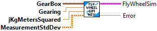
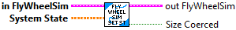

Returns the flywheel current draw.
Inputs:
- FlyWheelSim -- Data cluster
Outputs:
- Current_Amps -- The flywheel current draw. (Amps)

Creates a simulated flywheel mechanism.
Inputs:
- gearbox -- The type of and number of motors in the flywheel gearbox.
- gearing -- The gearing of the flywheel (numbers greater than 1 represent reductions).
- jKgMetersSquared -- The moment of inertia of the flywheel.
- measurementStdDevs -- The standard deviations of the measurements.
Outputs:
- outFlyWheelSim -- Updated data cluster
- Error -- If TRUE, an error occured.

Sets the input voltage for the flywheel.
Inputs:
- FlyWheelSim -- Data cluster
- volts -- The input voltage.
- BatteryVolts -- Current battery voltage.
Outputs:
- outFlyWheelSim -- Updated data cluster

Sets the system state.
Inputs:
- FlyWheelSim -- Data cluster
- state -- The new state.
Outputs:
- OutFlyWheelSim -- Updated data cluster
- SizeCoerced -- If TRUE, an error occured. Execution may continue.

Updates the simulation.
Inputs:
- FlyWheelSim -- Data cluster
- dtSeconds -- The time between updates.
Outputs:
- OutFlyWheelSim -- Updated data cluster
- Error -- If TRUE, an error occured.

Returns the flywheel velocity in RPM.
Inputs:
- FlyWheelSim -- Data cluster
Outputs:
- Velocity_RPM -- The flywheel velocity in RPM.

Returns the flywheel velocity.
Inputs:
- FlyWheelSim -- Data cluster
Outputs:
- Velocity_RadPerSec -- The flywheel velocity. (Rad/Sec)